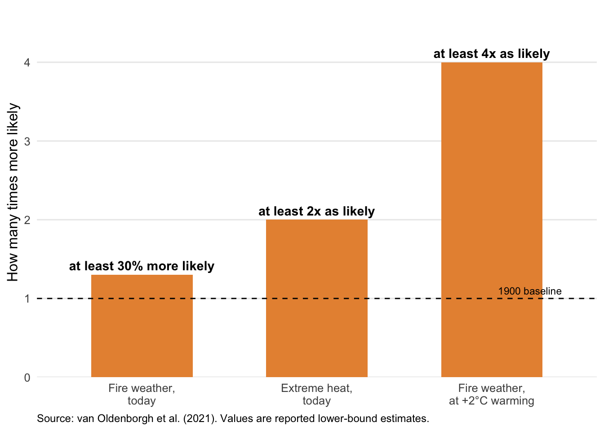

Why “once-in-a-generation” fire seasons are becoming a planning problem
The 2019–20 “Black Summer” fires burned tens of millions of hectares across New South Wales, Victoria and surrounding regions, destroyed thousands of homes, and placed enormous strain on emergency services and local budgets. For anyone responsible for bushfire and emergency-management planning, the natural next question is: was this a freak event, or is this closer to what fire seasons will increasingly look like?
That question matters for planning decisions that are made years in advance — how much is budgeted for emergency services, where new development is approved, how infrastructure is hardened, and how often fire-danger plans are revisited. If the weather conditions that drove Black Summer are becoming more common, then historical bushfire records are a less reliable guide to future risk, and plans built on those records may already be out of date.
What the evidence shows
The headline finding
Figure 1 summarises how much more likely two of the key ingredients behind Black Summer have become. Extreme heat comparable to that experienced during Black Summer is now at least twice as likely because of long-term warming. Fire weather overall — a combined measure of temperature, rainfall, humidity and wind — is at least 30% more likely than it was in 1900, and this is a conservative, lower-bound estimate. If warming reaches 2°C above 1900 levels, fire weather this severe is projected to become at least four times as likely.
Not every driver moved in the same direction, though — the overall picture is mixed. Drought is the exception. The study found no detectable climate-change signal in extreme meteorological drought — whether measured as low annual rainfall or an unusually dry fire season. Instead, two separate natural ocean and atmospheric cycles — unrelated to long-term warming — each accounted for roughly a third of the rainfall deficit behind the 2019 dry spell.
Figure 1 shows how much the odds have shifted for heat and fire weather; Table 1 brings all three findings together, including drought, and translates each into what it means for planning.
| Weather driver | Change since 1900 | What this means for planning |
|---|---|---|
| Extreme heat | At least 2x as likely | Treat extreme-heat days as a recurring risk, not a rare exception. |
| Severe fire weather | At least 30% more likely (likely an underestimate) | Historical counts of severe fire-danger days probably understate future risk. |
| Meteorological drought | No climate-change signal detected | Year-to-year rainfall swings from natural cycles remain a major, less predictable wildcard. |
Where this finding comes from
This comes from an international climate attribution study published in the peer-reviewed journal Natural Hazards and Earth System Sciences (Oldenborgh et al. 2021). The study combined decades of weather observations with simulations from 11 global climate models to compare the chances of Black Summer-level conditions occurring in today’s climate versus the climate of 1900, before most human-caused warming had occurred. It focused on the September–February fire season in the part of southeastern Australia most affected in 2019–20. The “conservative, lower-bound” caveat on the 30% figure reflects a known limitation: the climate models used still understate the warming trend actually observed, so the true increase in fire-weather risk may be larger.
What this means for your planning decisions
These findings speak directly to the question this post opened with. Black Summer-level fire weather is not a one-off: the conditions that produced it are measurably more likely today than a century ago. The 30% figure in Table 1 is a floor, not a ceiling, so historical frequency estimates for fire-danger days likely understate the risk ahead. Resourcing, zoning and infrastructure-hardening decisions built on those older estimates may need revisiting sooner than in the past.
The picture isn’t uniform, though. Drought showed no attributable warming trend — it’s driven by natural climate variability instead. That year-to-year unpredictability isn’t going away, and plans need to accommodate it rather than reading every bad fire season as proof of an accelerating trend.
One limit is worth flagging: this study covers the weather conditions that support severe fires, not what causes any individual fire. Ignition, fuel loads, land management and community exposure all remain within local and state control. Weather sets the stage; planning choices on the ground still shape much of the outcome.
References
Oldenborgh, Geert Jan van, Folmer Krikken, Sophie Lewis, et al. 2021. “Attribution of the Australian Bushfire Risk to Anthropogenic Climate Change.” Natural Hazards and Earth System Sciences 21: 941–60. https://doi.org/10.5194/nhess-21-941-2021.